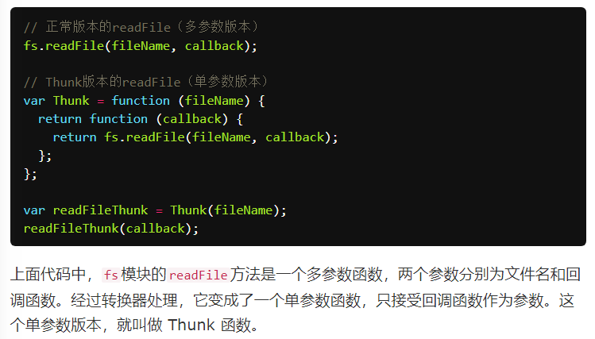

传统异步编程
* 回调函数
* 事件监听
* 发布/订阅
* Promise 对象
回调地狱=>Promise将回调函数的嵌套，改成链式调用
Promise 的最大问题是代码冗余，原来的任务被 Promise 包装了一下，不管什么操作，一眼看去都是一堆then，原来的语义变得很不清楚。
协程与Generator函数
传统的编程语言，早有异步编程的解决方案（其实是多任务的解决方案）。其中有一种叫做"协程"（coroutine），意思是多个线程互相协作，完成异步任务。
协程有点像函数，又有点像线程。它的运行流程大致如下。
* 第一步，协程A开始执行。
* 第二步，协程A执行到一半，进入暂停，执行权转移到协程B。
* 第三步，（一段时间后）协程B交还执行权。
* 第四步，协程A恢复执行。
上面流程的协程A，就是异步任务，因为它分成两段（或多段）执行。
Generator 函数是协程在 ES6 的实现，最大特点就是可以交出函数的执行权（即暂停执行）。
Generator 函数可以暂停执行和恢复执行，这是它能封装异步任务的根本原因。除此之外，它还有两个特性，使它可以作为异步编程的完整解决方案：函数体内外的数据交换和错误处理机制。
实例:
var fetch = require('node-fetch');
function* gen(){
var url = 'https://api.github.com/users/github';
var result = yield fetch(url);
console.log(result.bio);
}
var g = gen();var result = g.next();
result.value.then(function(data){
return data.json();
}).then(function(data){
g.next(data);
});
可以看到，虽然 Generator 函数将异步操作表示得很简洁，但是流程管理却不方便（即何时执行第一阶段、何时执行第二阶段）。
=============================
Thunk 函数
自动执行 Generator 函数的一种方法。
=>求值策略：传值调用和传名调用（后者即传引用）
（js是传值调用）
编译器的“传名调用”实现，往往是将参数放到一个临时函数之中，再将这个临时函数传入函数体。这个临时函数就叫做 Thunk 函数。
在 JavaScript 语言中，Thunk 函数替换的不是表达式，而是多参数函数，将其替换成一个只接受回调函数作为参数的单参数函数。

注：类似柯里化函数，但是有区别
- 柯里化是把接受多个参数的函数变换成接受一个单一参数（最初函数的第一个参数）的函数，并且返回接受余下的参数而且返回结果的新函数的技术
- thunk是将函数变成只能接受一个回调函数的函数
不够二者都是理由闭包对参数进行处理，封装新函数
任何函数，只要参数有回调函数，就能写成 Thunk 函数的形式。
转换器：
// ES5版本
var Thunk = function(fn){
return function (){
var args = Array.prototype.slice.call(arguments);
return function (callback){
args.push(callback);
return fn.apply(this, args);
}
};
};
// ES6版本
const Thunk = function(fn) {
return function (...args) {
return function (callback) {
return fn.call(this, ...args, callback);
}
};
};
//用法
var readFileThunk = Thunk(fs.readFile);
readFileThunk(fileA)(callback);
Thunk 函数现在可以用于 Generator 函数的自动流程管理
核心思路其实是yield命令将程序的执行权移出 Generator 函数，Thunk的回调函数中将执行权交还给 Generator 函数
//一个基于 Thunk 函数的 Generator 执行器。
function run(fn) {
var gen = fn();
function next(err, data) {
var result = gen.next(data);
if (result.done) return;
result.value(next); //这一句是核心，如果Generator 函数没有结束，会将next作为Thunk的回调，这就在每一步异步操作上执行了这个回调
}
next();
}
function* g() {
// ...
}
run(g);
Thunk 函数并不是 Generator 函数自动执行的唯一方案。因为自动执行的关键是，必须有一种机制，自动控制 Generator 函数的流程，接收和交还程序的执行权。回调函数可以做到这一点，Promise 对象也可以做到这一点。
====================================
co模块，用于 Generator 函数的自动执行
co 模块其实就是将两种自动执行器（Thunk 函数和 Promise 对象），包装成一个模块。使用 co 的前提条件是，Generator 函数的yield命令后面，只能是 Thunk 函数或 Promise 对象。如果数组或对象的成员，全部都是 Promise 对象，也可以使用 co。
====================================
基于Promise的自动执行
其实是在then方法中将执行权移交回Generator 函数
//自动执行器
function run(gen){
var g = gen();
function next(data){
var result = g.next(data);
if (result.done) return result.value;
result.value.then(function(data){
next(data);
});
}
next();
}
run(gen);
====================
co 支持并发的异步操作，即允许某些操作同时进行，等到它们全部完成，才进行下一步。

=====================
实例：处理 Stream
Node 提供 Stream 模式读写数据，特点是一次只处理数据的一部分，数据分成一块块依次处理，就好像“数据流”一样。这对于处理大规模数据非常有利。Stream 模式使用 EventEmitter API，会释放三个事件。
- data事件：下一块数据块已经准备好了。
- end事件：整个“数据流”处理“完了。
- error事件：发生错误。
使用Promise.race()函数，可以判断这三个事件之中哪一个最先发生，只有当data事件最先发生时，才进入下一个数据块的处理。从而，我们可以通过一个while循环，完成所有数据的读取。
const co = require('co');
const fs = require('fs');
const stream = fs.createReadStream('./les_miserables.txt');let valjeanCount = 0;
co(function*() {
while(true) {
const res = yield Promise.race([
new Promise(resolve => stream.once('data', resolve)),
new Promise(resolve => stream.once('end', resolve)),
new Promise((resolve, reject) => stream.once('error', reject))
]);
if (!res) {
break;
}
stream.removeAllListeners('data');
stream.removeAllListeners('end');
stream.removeAllListeners('error');
valjeanCount += (res.toString().match(/valjean/ig) || []).length;
}
console.log('count:', valjeanCount); // count: 1120
});
上面代码采用 Stream 模式读取《悲惨世界》的文本文件，对于每个数据块都使用stream.once方法，在data、end、error三个事件上添加一次性回调函数。变量res只有在data事件发生时才有值，然后累加每个数据块之中valjean这个词出现的次数。